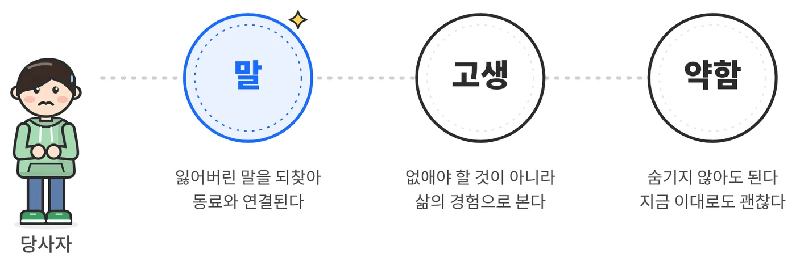
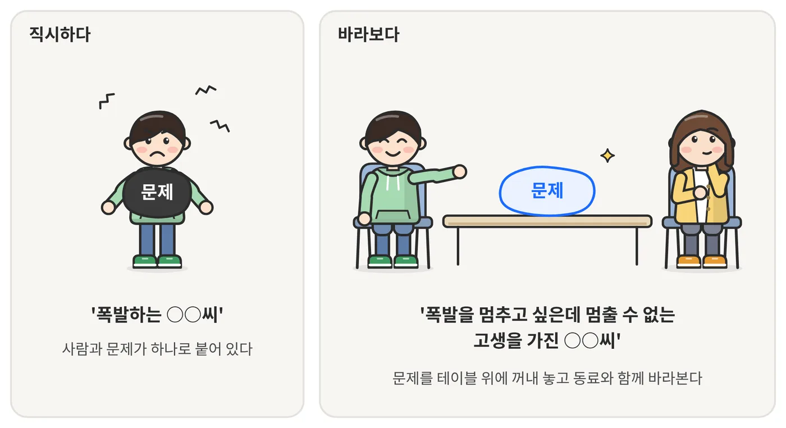
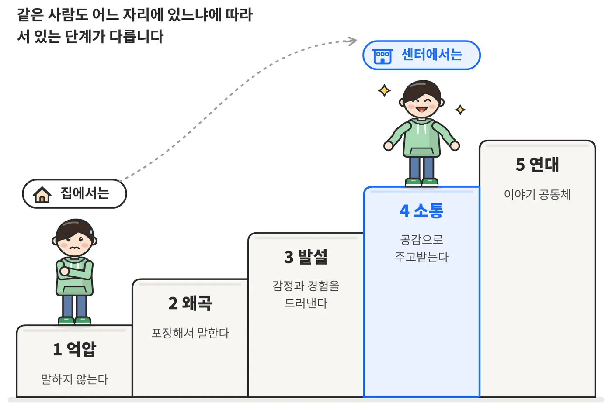
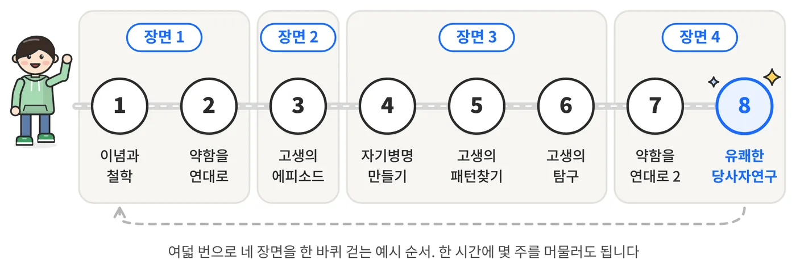
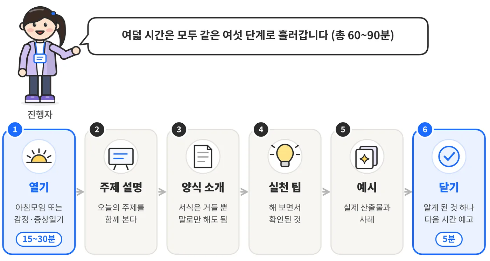
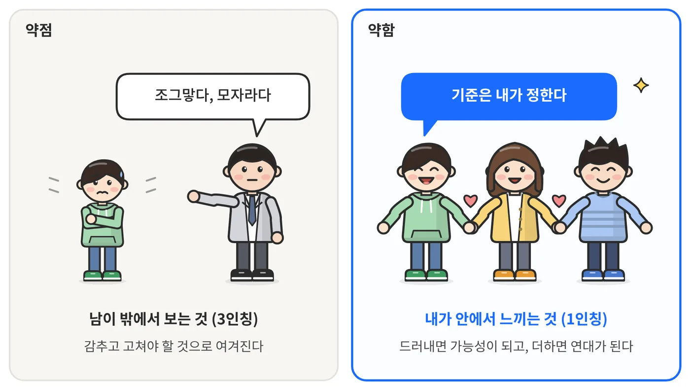
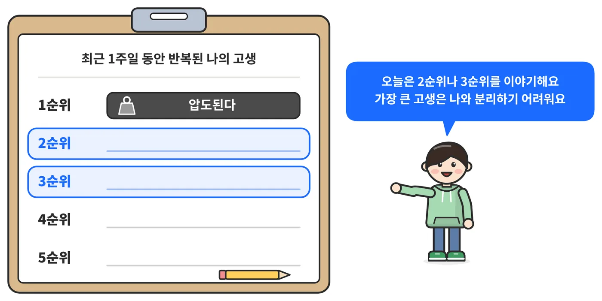
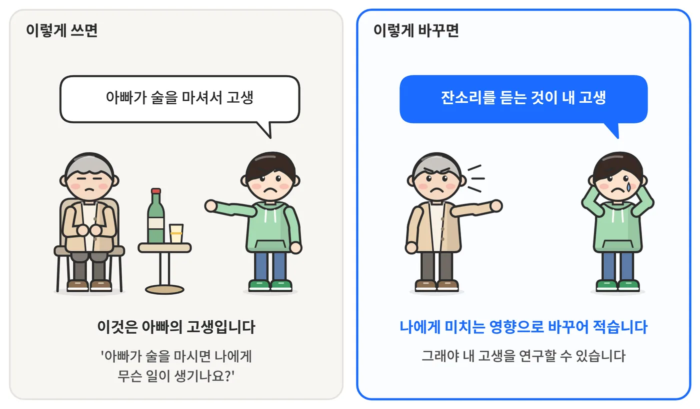
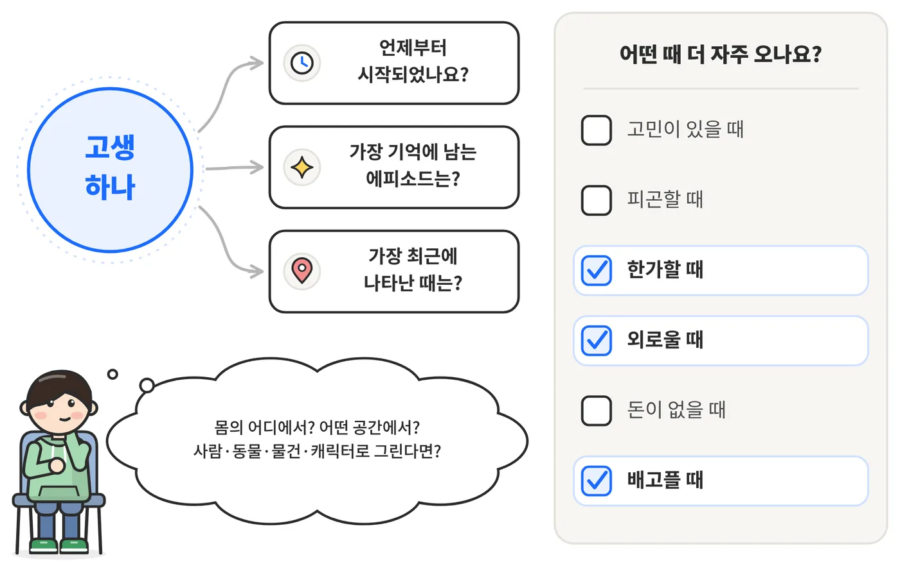
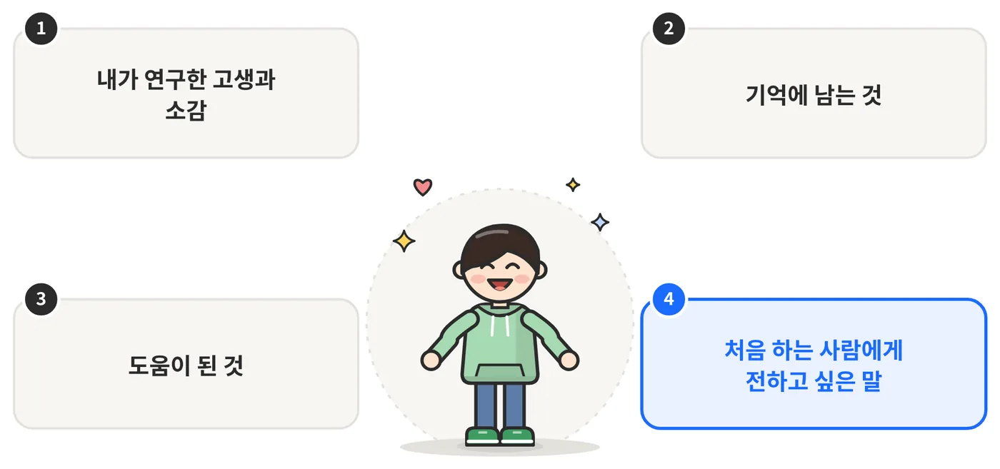

자신의 고생을 스스로, 함께 연구합니다
당사자연구는 2001년 일본 홋카이도 우라카와에 있는 정신장애인의 생활 거점, 베델의 집에서 시작되었습니다. 정신질환을 가진 사람들이 모여 살고 일하며 이야기 공동체를 이루었고, 그 안에서 ‘자신의 고생을 스스로 연구한다’는 실천이 태어났습니다. 청주정신건강센터에서는 2015년부터 매주 당사자연구 모임을 열어 왔습니다.
당사자연구가 되찾으려는 세 가지

당사자연구는 말로 만나는 것을 중요하게 여깁니다. 정신질환은 흔히 사람들과의 의사소통에 어려움을 가져옵니다. 잃어버린 말을 되찾으면 동료와 연결됩니다.
살아가는 고생을 소중히 여깁니다. 고생은 없애야 할 것이 아니라 삶의 경험이고, 누구나 자기 고생을 짊어지며 자기 삶에 책임을 지는 존재라고 봅니다.
인간이 지닌 약함을 존중합니다. 약함은 숨기거나 극복해야 하는 대상이 아니라, 드러내어 함께할 방법을 찾아가는 출발점입니다. 지금 이대로도 괜찮다는 말로 줄일 수 있습니다.
여덟 가지 태도
방법을 절차로 적기 전에 먼저 태도로 말합니다.
- “연구라도 해볼까”에서 시작합니다
- 자기 고생의 주역이 되어 자신을 구합니다
- 당사자가 자기 경험 안에서 서 있는 자리를 소중히 여기고, 눈높이를 맞춥니다
- 문제를 철저히, 계속 소중히 여깁니다
- 당사자와 동료의 경험 안에 지혜가 있습니다
- 약함이 힘입니다
- ‘생각한다’는 행위를 되찾습니다
- 사람과 문제를 분리하여, 문제를 멀리서 바라봅니다
사람과 문제를 분리합니다

열두 가지 마음가짐
여덟 가지가 연구자의 태도라면, 열두 가지는 모임 전체에 흐르는 공기에 가깝습니다.
고생에 대한 대처를 전문가나 가족에게 모두 떠맡기지 않고 고생의 주체가 되며, 동료와 함께합니다.
서로의 약함과 고생을 있는 그대로 공개합니다.
실패나 막다른 경험 안에도 지금의 고생을 풀 지혜와 생활정보가 쌓여 있습니다.
병과 증상의 신호를 회복으로 향하게 하는 메시지로 읽고, 그 경험을 살린 생활방식을 찾습니다.
유머는 눈앞의 곤란에서 한 발 떨어지게 하고 살아가는 용기가 됩니다.
모른다고 인정하는 것이 연구의 출발점입니다.
경험을 테이블에 펼쳐 놓고 제3자의 눈으로 바라봅니다.
당사자 자신이 보고 느끼는 세계를 존중합니다.
사람이 문제가 아니라 문제가 문제라고 봅니다.
사람을 만나고 실제의 장면에 발을 딛으며 연구합니다.
필요한 때, 필요한 장소에서, 필요한 기간 동안 합니다.
나에게만 있는 줄 알았던 고생이 동료와 공통된 고생임을 알게 됩니다.
이야기의 발달 다섯 단계

| 단계 | 모습 |
|---|---|
| 1. 억압 | 자기 속의 불만을 외면한 채 문제를 묻어 두는 단계 |
| 2. 왜곡 | 말을 하기 시작하지만 자신을 불투명하게 드러내는 단계 |
| 3. 발설 | 자기 이야기를 하기 시작하면서 해소와 자기정리가 시작되는 단계 |
| 4. 소통 | 공감하며 듣고 말하는 가운데 자아를 세우는 단계 |
| 5. 연대 | 다른 사람의 치유를 도와 이야기 공동체를 이루는 단계 |
다섯 단계는 오한숙희의 『수다가 사람 살려』(2004)에 실린 ‘수다 치유의 5단계’를 바탕으로 합니다. 사람을 나누는 등급이 아니라, 지금 이 자리가 그 사람에게 어떤 자리인지를 비추어 보는 지도입니다.
규범이 아니라 예시입니다
당사자연구에는 원래 정해진 매뉴얼이 없습니다. 정해진 순서도, 정답도 없습니다. 그래서 이 안내서는 “이렇게 해야 한다”가 아니라 “우리가 해 본 방법”을 보여 주고 권하는 책입니다.
| 부 | 내용 |
|---|---|
| 여는 글 | 이 책이 나오기까지, 이 책을 읽는 법, 만든 사람들 |
| 1부 | 당사자연구가 되찾으려는 세 가지, 여덟 가지 태도, 이야기의 발달 다섯 단계, 열두 가지 마음가짐, 당사자연구가 바라보는 세상, 당사자연구의 말들 |
| 2부 | 당사자연구는 이렇게 흘러간다: 네 장면과 여덟 번의 시간, 모임의 기본 틀, 진행하면서 어려운 점 |
| 3부 | 자주 묻는 질문 33가지와 사례 모음 |
| 4부 | 베델의 집 당사자연구 이념 |
| 부록 | 예시 일정, 서식 모음 |
무엇을 말하고, 어떤 답에 이르고, 한 자리에 얼마나 오래 머무를지는 모임에 앉은 사람들이 정합니다.
처음 하는 기관이 네 장면을 한 바퀴 걸어 볼 수 있는 바깥의 틀입니다. 여덟 번은 끝나는 지점이 아니라 한 바퀴입니다.
본문은 청주정신건강센터의 원고 「열린 대화를 통한 당사자연구: 경험전문가 활동 매뉴얼」(2022)을 바탕으로 합니다. AIR Lab은 운영 설계를 자문하고, 여덟 번의 시범 운영 기록을 센터와 함께 읽으며 진행 예시와 그림, 문답, 서식을 더해 안내서로 엮는 일을 맡았습니다.
네 장면, 여덟 번의 시간
2부는 ‘1회기, 2회기’가 아니라 네 개의 장면으로 되어 있습니다. 당사자연구는 회기라기보다 과정이어서, 어떤 장면은 한 번에 지나가고 어떤 장면에는 몇 주고 머무릅니다. 지나간 장면으로 언제든 되돌아가도 됩니다.

자리를 만들다
이념 공유, 에티켓 정하기, 약함의 정보공개, 고생 리스트
당사자연구의 이념과 철학을 통해 태도와 자세를 갖춥니다. 당사자연구란 무엇인지, 낯선 용어는 무슨 뜻인지 함께 읽고, 안심하고 말할 수 있도록 에티켓을 함께 정합니다.
약함의 정보공개를 통해 도움의 연대를 만듭니다. 약점과 약함의 차이를 살피고, 고생 리스트를 적습니다. 무엇을, 어디까지, 언제 말할지는 참여자 자신이 정합니다.
고생을 꺼내놓다
고생의 목록과 프로필, 탐색 카드, 마인드맵, 감각체크
고생과 증상의 문제를 정의하면서 그동안 고생해 온 삶을 정리합니다. 고생의 프로필을 적고, 고생이 언제 시작되었고 언제 커지고 약해졌는지 역사를 살핍니다.
이름을 붙이고 패턴을 찾다
외재화, 자기병명, 패턴 탐색, 요인 탐구
사람과 문제를 분리해 고생과 증상을 정의합니다. 반복되는 고생에 진단명이 아닌 나만의 이름을 붙입니다.
감정일기와 증상일기를 바탕으로 고생이 심해지는 때와 견딜 만한 때를 찾아 반복되는 주기를 알아봅니다.
고생에 영향을 주는 요인을 안쪽(생각과 감정, 몸)과 바깥(사회적응, 사회의 영향)으로 나누어 마인드맵으로 찾아봅니다.
자신을 돕는 방법을 함께 찾다
대처법 기록과 발견, 연습, 연구 발표와 공유
그동안 써 온 대처 방법이 효과가 있었는지 돌아보고, 동료들과 새로운 대처를 찾아 그 자리에서 연습해 봅니다. 대처는 실험이고, 실패해도 괜찮습니다.
한 사람의 연구를 공개하고 나눕니다. 연구는 한 번으로 끝나지 않고 삶의 연속으로 이어진다는 것을 확인하며 여덟 번을 되돌아봅니다.

한 사람의 당사자연구가 흘러가는 순서
- 연구 테마 정하기
- 고생의 구조 밝히기
- 자기병명 붙이기
- 자신을 구하는 구체적인 방법 찾고 연습하기
- 새로운 대처방법 실험하기
- 실험한 결과를 동료들과 공유하고 논의하기
- 당사자연구와 실험을 계속해 나가기
네 장면은 이 순서를 비슷한 일끼리 묶고, 그 앞에 모든 것의 바탕인 ‘안심하고 말할 수 있는 자리’를 둔 것입니다.
모임의 기본 틀
공간과 자기 개방 정도에 따라 유연하게
이야기의 흐름에 따라 유연하게
필요하면 계속 이어 갑니다
기관이 참여자의 사정에 맞추어 정합니다
모든 시간이 밟는 여섯 단계

| 단계 | 내용 |
|---|---|
| 1. 도입(워밍업) | 지금 경험하고 있는 고생과 증상을 한마디씩 나누며 오늘의 자리로 들어옵니다. |
| 2. 주제 설명 | 그 시간의 주제를 함께 살펴봅니다. |
| 3. 양식 소개 | 이야기를 돕는 서식을 소개합니다. 쓰지 않고 말로만 해도 됩니다. |
| 4. 함께 해 보기 | 그 시간의 활동을 함께 합니다. |
| 5. 예시 보기 | 앞서 한 사람들의 산출물과 사례를 봅니다. |
| 6. 마무리 및 과제 | 오늘 연구로 알게 된 것, 새롭게 노력해 볼 것을 나눕니다. |
함께 정하는 에티켓의 두 가지 예
- 경청하기
- 비난하지 않기
- 동료의 이야기가 끝날 때까지 기다리기
- 고생을 모두 함께 공유하기
- 비밀을 지켜주기
- 판단하지 않기
어느 시간에나 꺼낼 수 있는 세 가지
고생이 일어난 장면을 말로만 설명하지 않고 그 자리에서 짧게 재연해 봅니다.
이름은 네 번째 시간에 다 붙이는 것이 아닙니다. 붙일 수 있을 때 붙입니다.
모임에서는 약을 먹으라, 먹지 말라고 판단하지 않습니다. 약은 주치의와 상의할 일이고, 모임은 주치의에게 물어볼 질문을 함께 만듭니다.
안내서에 실린 활동 몇 가지
모임에서 실제로 쓰는 질문과 서식의 일부입니다. 쓰지 않고 말로만 해도 됩니다.
약점과 약함은 다릅니다
약점은 남이 밖에서 보는 것이고 고쳐야 할 것으로 여겨집니다. 약함은 내가 안에서 느끼는 것이고, 드러내면 가능성이 되고 더하면 연대가 됩니다. 약함의 기준은 내가 정합니다.

고생 리스트: 왜 1순위를 바로 꺼내지 않는가
가장 고생하고 있는 것 가운데 2순위나 3순위의 것을 골라 이야기합니다. 가장 큰 고생은 나와 분리하기 어렵기 때문입니다.

누구의 고생인가
다른 사람의 행동을 적었다면, 그 일이 나에게 미치는 영향으로 바꾸어 적습니다. 그래야 내 고생을 연구할 수 있습니다.

고생 탐색 카드
고생 하나를 두고 세 가지를 묻습니다. 언제부터 시작되었나요. 가장 기억에 남는 에피소드는 무엇인가요. 가장 최근에 나타난 때는 언제인가요. 그리고 어떤 때 더 자주 오는지 여섯 가지 상황에서 골라 봅니다.

되돌아보기의 네 질문
마지막 시간에는 모두가 같은 순서로 네 가지를 말합니다. 내가 연구한 고생과 소감, 기억에 남는 것, 도움이 된 것, 처음 하는 사람에게 전하고 싶은 말.

당사자연구의 말들
당사자연구에는 고유한 말들이 있습니다. 대부분 베델의 집에서 만들어져 청주의 자리에서도 쓰여 온 말입니다.
- 손님
- 생각이나 감정이 찾아오는 상황을 부르는 말입니다.
- 압박
- 망상과 생각에 빠져드는 괴로운 상태를 말합니다.
- 오작동
- 위험한 장소가 아닌데도 이전의 고생이 떠올라 극도의 긴장감이 일어나는 반응입니다.
- 환청씨
- 환청에 이름을 붙인 호칭입니다. 베델의 집에서는 환청을 ‘환청씨’라고 친근하게 부릅니다.
- 자기병명
- 진단명이 아니라, 당사자 자신이 겪는 고생의 의미나 형태를 반영해 스스로 붙인 병명입니다.
- 약함의 정보공개
- 고생을 홀로 감싸 안지 않고 드러내어 동료들과 공유하는 것입니다.
- 고생의 구분
- 동료들과 함께 고생을 정리할 때, 자신의 고생과 타인의 고생을 분별하는 것입니다.
- 고생의 보류효과
- ‘연구해 보자’라고 생각함으로써 고생을 잠시 미루어 두는 것입니다.
- 실험
- 자신을 구하는 방법을 찾기 위해 방법의 효과를 직접 확인해 보는 활동입니다. 실패해도 괜찮습니다.
- 자신을 구하는 방법
- 고생에 대처하는 방법입니다. 고생의 주인공은 당사자 자신이지만, 그 방법은 동료들과 함께 구할 때 더 효과적입니다.
- 간판을 바꿔쓰기
- 고생과 직면했을 때 저절로 떠오르는 생각을 바꾸는 것입니다.
- 진행자
- 그날의 모임을 이끄는 사람입니다. 역할의 이름이지 자격의 이름이 아닙니다.
이 페이지에 실은 것과 싣지 않은 것
- 당사자연구의 소개와 기본 개념
- 안내서의 구성과 네 장면, 여덟 시간의 흐름
- 모임의 기본 틀과 활동 몇 가지
- AIR Lab 자문진이 그린 그림
- 참여자의 사례와 말, 회기 기록
- 자주 묻는 질문 33가지와 사례 모음
- 베델의 집 이념집의 그림
- 서식 원본과 진행자의 말 예시